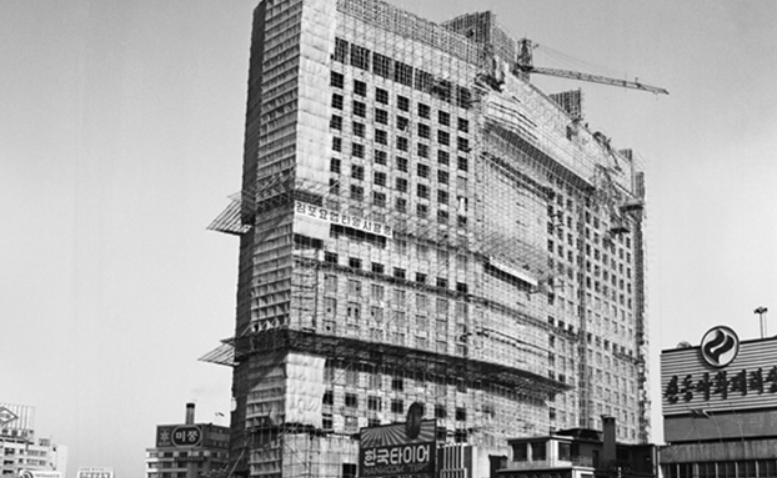

경제성장

70년대 서울 도심에서는 재개발 사업이 본격화돼 소공동에 플라자호텔(1978년 완공),롯데호텔(1979년 완공)같은 대형 건축물이 하나둘씩 건설되면서 현대도시로서의 면모를 갖추기 시작했습니다
나훈아 남진
전남 목포 출신인 남진은 부산 출신인 나훈아와 각각 영호남을 대표하며 1970년대 가요계에서 라이벌 구도를 형성했다. 라이벌 가수 남진과 나훈아는 우리 가요계 트로트 가수의 대표이자 화려한 뉴스 메이커로 많은 사람들의 호기심을 자극했다.
긴급 속보
1979년 10월 26일 박대통령이 피살된후 최규하 국무총리가 통일주체국민회의 대의원회에서 제 10대 대통령으로 당선되었다.
12.12 군사반란
그러나 최대통령이 등장한 지 6일만인 12월 12일 국군보안사령관 전두환 소장, 9사단장 노태우 소장, 그리고 보안사령부 장교들이 중심이 되어 쿠데타가 일어났다.
IMF 외한 위기
1997년 11월 21일,대한민국이 IMF에 구제금융을 신청하게 되었습니다.사실 상 국가 부도 상황이 되었습니다.당시 달러 환율이 2,000원까지 올랐습니다. 그리고 금리도 연 30%에 다다랐습니다.
수학 능력시험 시행
한국에서 (수시・특별 전형을 제외한) 정시 전형으로 대학교에 입학하기 위해서는. 흔히 ‘수능’이라 불리는 대학수학능력시험을 보아야 한다. 매년 11월 실시되는 수능은 1993년 처음으로 실시되었다.
2002 월드컵
2002년 한국과 일본에서 공동으로 제17회 FIFA 월드컵을 개최하였다. 2002 월드컵은 역사상 최초로 아시아에서 열리는 월드컵이었고, 또한 한국 역사상 4강이라는 최고의 성적을 기록했던 월드컵 행사이기도 하였다.
K-pop의 태동기
2000년대 후반에는 소녀시대, 투애니원, 브라운 아이드 걸스, 2PM, 티아라, 미쓰에이, 카라 등 댄스음악 중심의 아이돌 그룹들이 인기를 누렸다.
동남아시아, 중국, 일본 등 해외시장으로 활발히 진출하는 그룹들이 많아지면서, 다국적 멤버로 아이돌 그룹을 구성하는 경우도 늘기 시작했다.
세월호 참사
2016년 4월 16일 인천에서 출발하여 제주도로 향하던 한 여객선이 남해바다에서 침몰하는 일이 발생하였다. 학생, 교사, 신혼부부, 가족 등 476명이 탑승한 여객선에서 생존자는 172명뿐이었다. 나머지 304명은 사망하거나 실종되었다.
2018 평창 올림픽
2018년 2월 한국 평창, 강릉, 정선 일대에서 제23회 동계올림픽이 열렸다. 이는 1988년 서울 하계올림픽에 이어 대한민국에서 개최한 두 번째 올림픽이고, 쇼트트랙 스피드 스케이팅, 피겨스케이팅, 봅슬레이, 컬링 등 15종목의 경기가 열렸고 92개국에서 약 2,925명의 인원이 참가하였다.